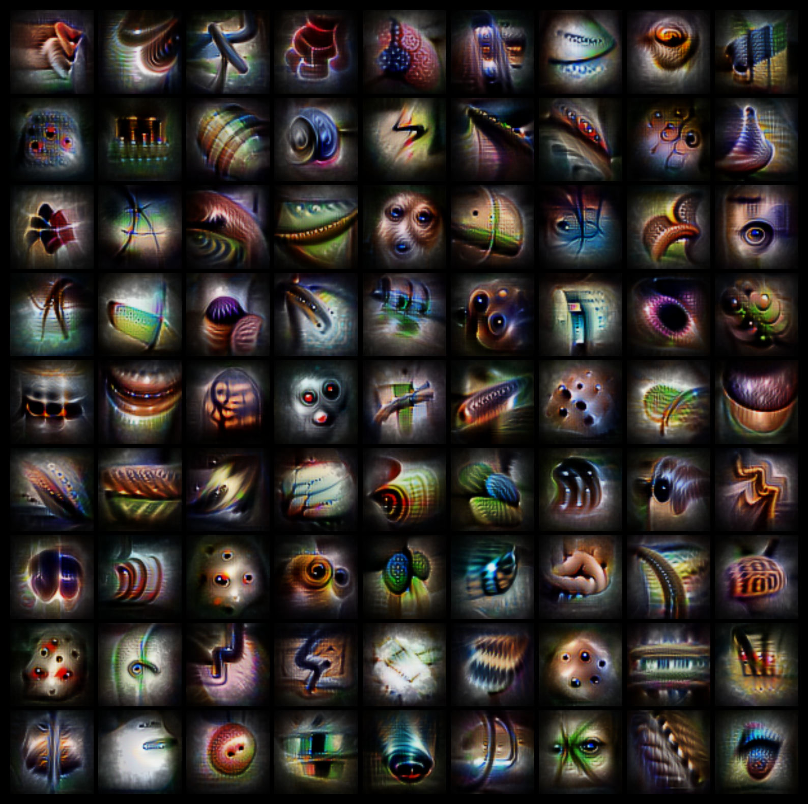
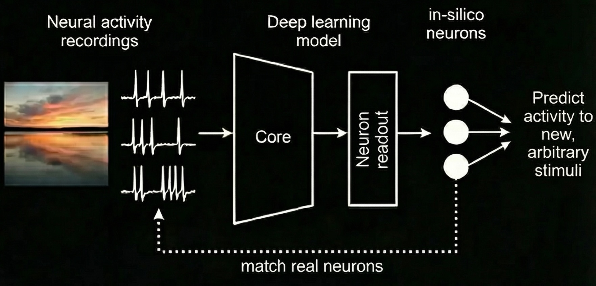
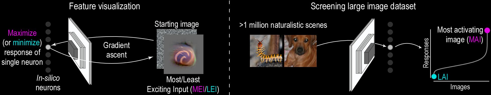
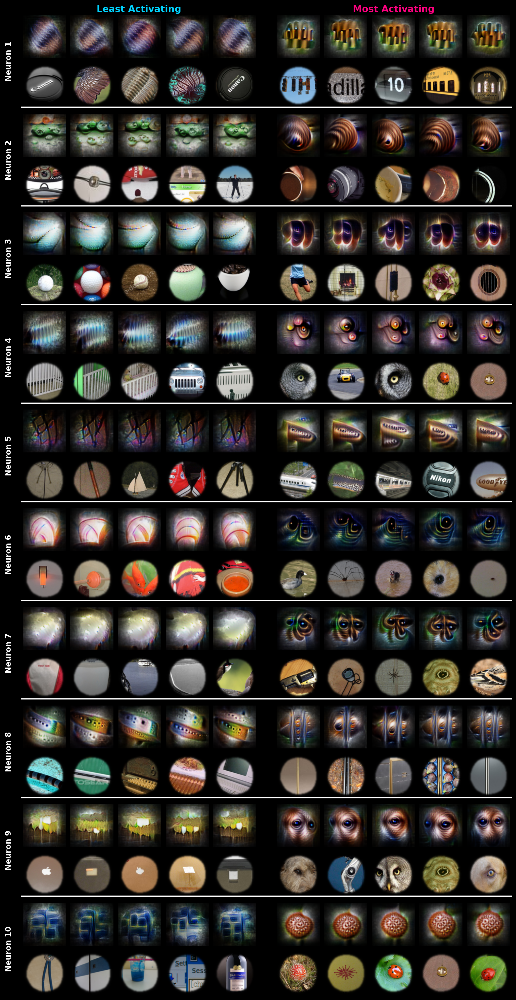
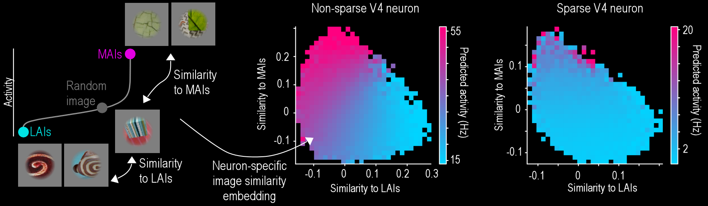

Many neurons in the visual cortex act not just as monosemantic feature detectors, but instead represent a continuum from suppressing to activating visual features. By combining neural recordings with deep learning models, we demonstrate that this continuous coding scheme is complex yet interpretable, conserved across species, and informative for advancing both neuroscience and AI.
bioRxiv
Website by Vedang Lad

Traditional views in sensory neuroscience depict cortical neurons as sparse feature detectors that only fire when a stimulus matches their preferred pattern. This perspective has been highly influential but often undervalues the nuanced role of inhibition. Understanding how excitation and suppression interact across the vast array of natural images is crucial for unraveling how visual neurons encode the high dimensional visual input. Here, we address these questions by combining neural recordings with deep learning-based models, enabling unlimited in silico experiments and overcoming experimental constraints.
We recorded from neurons in macaque V4 while animals viewed thousands of natural images. We then trained a convolutional neural network to predict the firing rate of single neurons based on visual input. These functional digital twins accurately replicate stimulus-response behaviors, allowing us to probe neural stimulus selectivity in ways that direct experimentation cannot.

Using gradient-based feature visualization, we created images that maximized or minimized predicted neuron activity, revealing structured features at both extremes. We also screened over one million ImageNet images to find natural images eliciting the strongest and weakest responses.

Explore the dual-feature selectivity of individual V4 neurons. The visualization below shows how a single neuron's predicted activity varies across images sampled along the axis from least-activating to most-activating features. Notice how responses aren't simply binary (on/off) but form a graded continuum—consistent with the neuron encoding relative similarity to both feature poles.
Most Exciting Input (MEI)
Least Exciting Input (LEI)
Screened Images
Interactive Demo: Explore how V4 neurons respond to natural images along their selectivity axes. Each neuron shows three views: MEI (optimized most-exciting input), LEI (optimized least-exciting input), and Screened (natural images ranked by response).
We found that many cortical neurons were non-sparse, maintaining high activity for most images. Validation confirmed that the model predictions generalized to real neurons. For those neurons, both the most activating and most suppressing images were characterized by distinct, interpretable visual features. These “poles” were often qualitatively different rather than simple inverses, revealing a rich representational structure.
This two-sided structure also appeared across neurons: features that strongly activated one neuron often resembled those that strongly suppressed another, suggesting coordinated relationships at the population level.

To understand how these non-sparse neurons encode natural images, we mapped each neuron’s activity onto an image embedding defined by its most activating and suppressive images. We discovered that neural activity varied smoothly in relation to the distance to both poles. In contrast, sparse neurons showed a simpler pattern: their responses depended primarily on how close an image was to the activating pole, in line with the feature detector idea.

Finally, these patterns were consistent across visual areas and species. We observed the same dual-feature selectivity in macaque V1, and replicated the phenomenon in mouse V1 and higher visual areas, indicating that this dual-feature coding scheme reflects a conserved strategy across mammals.
Many cortical neurons operate along a continuum defined by opposing activating and suppressive features. Responses reflect where an image falls along this continuum, not simply whether a single feature is present. This dual-feature code may enhance representational expressivity while maintaining interpretability. Mechanistically, this could be implemented by feature-selective normalization, as suggested by recent anatomical studies. For artificial vision systems, explicitly modeling suppressive features through selective normalization could yield networks that are both more powerful and easier to understand.
If you find this work useful for your research, please cite our paper:
@article{frankekarantzas2025dualfeature,
title = "Dual-feature selectivity enables bidirectional coding in visual
cortical neurons",
author = "Franke, Katrin and Karantzas, Nikos and Willeke, Konstantin and
Diamantaki, Maria and Ramakrishnan, Kandan and Elumalai, Pavithra
and Restivo, Kelli and Fahey, Paul and Nealley, Cate and Shinn,
Tori and Garcia, Gabrielle and Patel, Saumil and Ecker, Alexander
and Walker, Edgar Y and Froudarakis, Emmanouil and Sanborn, Sophia
and Sinz, Fabian H and Tolias, Andreas",
journal = "bioRxiv",
pages = "2025.07.16.665209",
month = jul,
year = 2025,
language = "en"
}
}